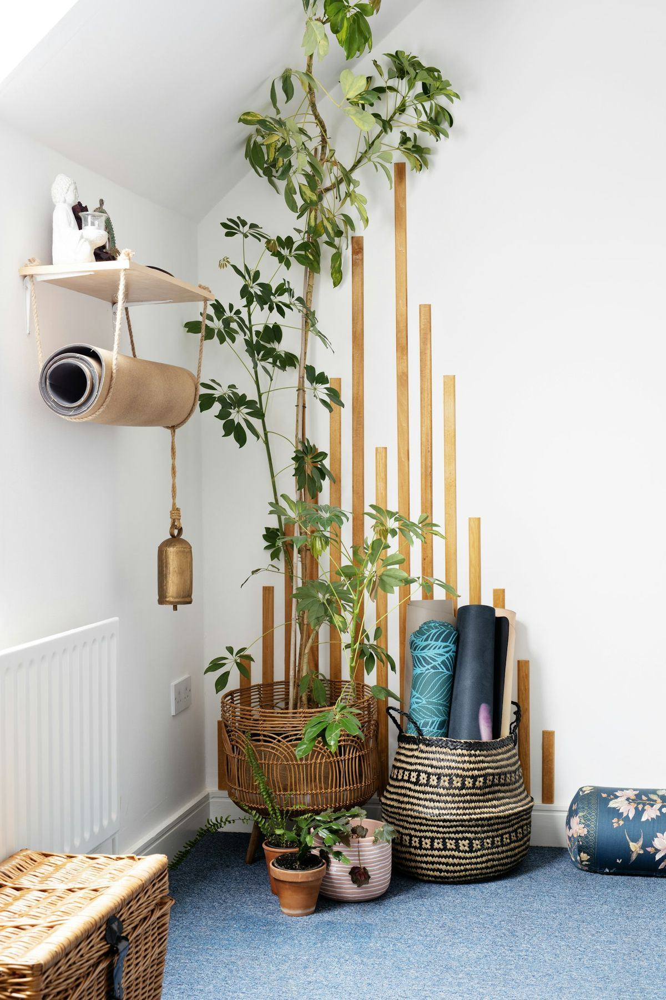

Buying checklist
Small Home Gym Ideas: What to Buy First

This guide contains affiliate links. If you buy through them, Holistic Life may earn a small commission at no extra cost to you. How we use affiliate links.
Quick answer
- Buy in this order: a mat, resistance bands, adjustable dumbbells, then optional extras.
- Measure your floor space and your storage before you order anything.
- In an apartment, think about floor protection and noise first.
- Start small and add later. Most beginners need far less than they think.
You do not need a spare room to work out at home. A patch of floor about the size of a yoga mat is enough for a lot of useful training. A small home gym comes down to what you buy, and in what order, so you do not fill the space with gear you never use.
This is a nurse-run site, and the rule here is simple: start small, add later. Buy the next piece only when you have outgrown the last one.
Measure your space first
You do not need a tape measure for the basics. Here is a plain way to check:
- Lie on the floor with your arms stretched overhead. That is the length you need.
- Stretch your arms out to both sides. That is the width.
- Stand up and reach high and wide. If you can do that without touching furniture, you have room for most beginner moves.
If you need to push the couch aside every time, plan for gear that stows away quickly. A spot that is always ready is the one you will actually use.
The order to buy things in
The list below runs from first purchase to last. Each step earns its place before the next one makes sense.
- A mat first, because it costs you almost no space and makes every floor move easier to start.
- Bands second. They let you practice good form with very little load.
- Dumbbells third. Once bands feel easy, weights give you a way to keep progressing.
- Extras last. A kettlebell, a bench and storage are optional, and you will know if you need them.
Exercise mat
Buy this first. It marks out your workout space, protects your floor and makes every floor move more comfortable.
What to look for
- Thick enough to cushion knees and wrists
- A non-slip texture on both sides
- Long enough to lie on from head to hips
See exercise mats on Amazon (paid link)
Resistance bands
Bands are light, quiet and easy to store. They are a gentle way to add challenge before you move on to weights.
What to look for
- A set with several strength levels
- Loop bands for legs and glutes, and tube bands with handles for arms
- Fabric covers or thick material that will not pinch
See resistance bands on Amazon (paid link)
Adjustable dumbbells
One adjustable pair replaces a whole rack, which matters when floor space is tight. Two fixed pairs (one lighter, one heavier) also work.
What to look for
- A quick, secure way to change weight, with no loose parts
- A small footprint and a stable tray or base
- A weight range that starts light and grows with you
See adjustable dumbbells on Amazon (paid link)
Kettlebell
Optional, and best after you have learned the basic moves. One kettlebell is compact and good for squats, hinges and carries.
What to look for
- A smooth, wide handle that fits both hands
- A flat base so it does not roll
- A weight that you can lift with good form
See kettlebells on Amazon (paid link)
Foldable bench
A bench opens up more moves, like presses and step-ups. Buy it only if you have a spot to put it away.
What to look for
- Folds flat to slide behind a door or under a bed
- A stable frame with a non-slip base
- A firm pad that is wide enough to lie on comfortably
See foldable benches on Amazon (paid link)
Under-bed or closet storage
Gear you can put away gets used. Gear that clutters the room gets ignored. A simple bin or basket keeps it tidy.
What to look for
- Sturdy sides that can hold weight
- A low profile that fits under a bed or sofa
- Handles or wheels for easy pulling
See storage bins on Amazon (paid link)
Interlocking floor tiles
Useful if you live upstairs or have delicate floors. They protect the floor and soften the sound of weights being set down.
What to look for
- Dense foam or rubber, not thin craft foam
- Edges that lock together so tiles do not slide
- Easy to take apart and stack in a closet
See floor tiles on Amazon (paid link)
Floors and noise in an apartment
Downstairs neighbors hear more than you think. A few simple habits help:
- Lay a mat or tiles under anything you set down. Lower weights slowly instead of dropping them.
- Choose quiet moves. Slow strength work and bands are much quieter than jumping.
- Pick your hours. Avoid early mornings and late nights if you can.
- Protect your floor. Wood and laminate scratch easily. Tiles or a thick mat spread the load.
Storing everything
Think in layers. Bands, a mat and a pair of dumbbells fit in a closet corner or in a bin under the bed. A bench folds flat behind a door. Keep what you use most within arm's reach, so setting up takes under a minute.
A small basket by the couch with bands and a mat also works as a visual reminder.
What to skip at first
- Large machines. Many take up a lot of space and need a fixed spot. Wait until you know what you will use. If you want a cardio option, a walking pad is far more compact. See our walking pad buying checklist.
- Full dumbbell racks. One adjustable pair does the same job.
- A pile of accessories. Gadgets tend to end up in a drawer.
- Heavy weights. Starting light helps you learn good form.
A sample starter setup
Here is what a small, sensible kit looks like. A mat, a set of bands and one adjustable pair of dumbbells fit in a single bin. That kit covers squats, rows, presses, bridges and carries, which is a full-body routine. You can leave everything in a closet and set up in a minute or two.
Add floor tiles if noise is a worry. Add a bench or a kettlebell after a month or two of steady use, once you know the routine is sticking. If a piece sits unused for weeks, that is useful information. It means you probably do not need the next one yet.
Keep it safe
Start with weights that feel light, and move slowly. Check that adjustable parts are locked before you lift. Clear the floor of cords and pets. If you have a health condition, an injury or are returning after a long break, check with your clinician before starting.
What to do with your new kit
Once you have a mat and a pair of dumbbells, you are ready for our beginner dumbbell workout. If you are buying for someone else, our home gym gifts for small spaces has more ideas that fit the same rule: small, useful and easy to put away.
Save this guide for later
Tap a pin to save it to your Pinterest boards.